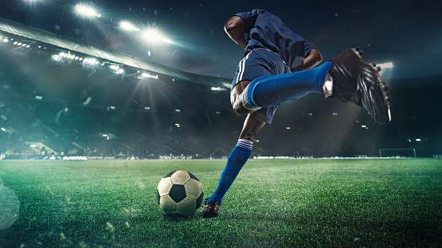
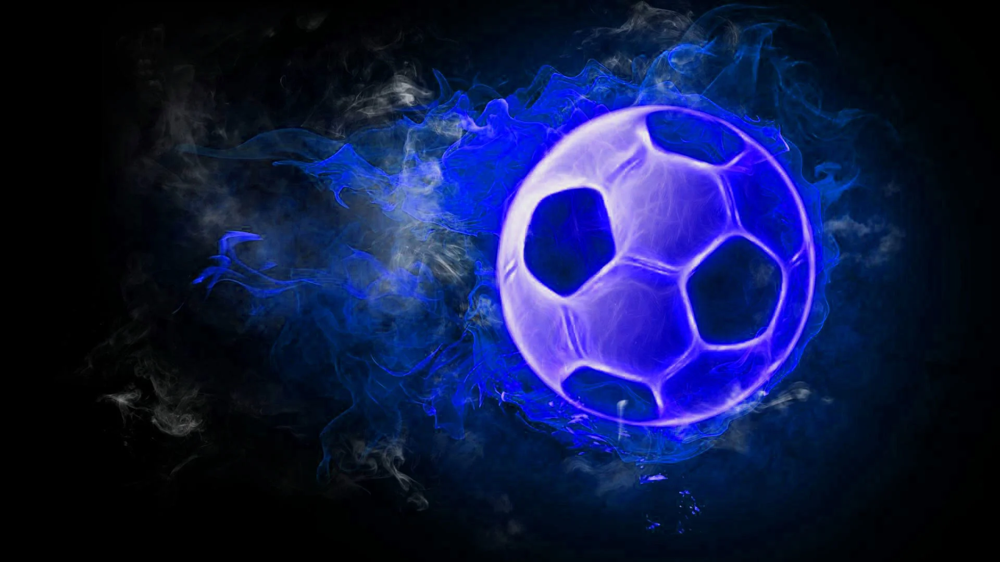
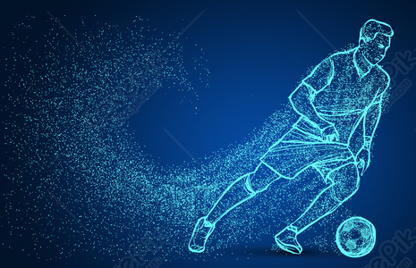
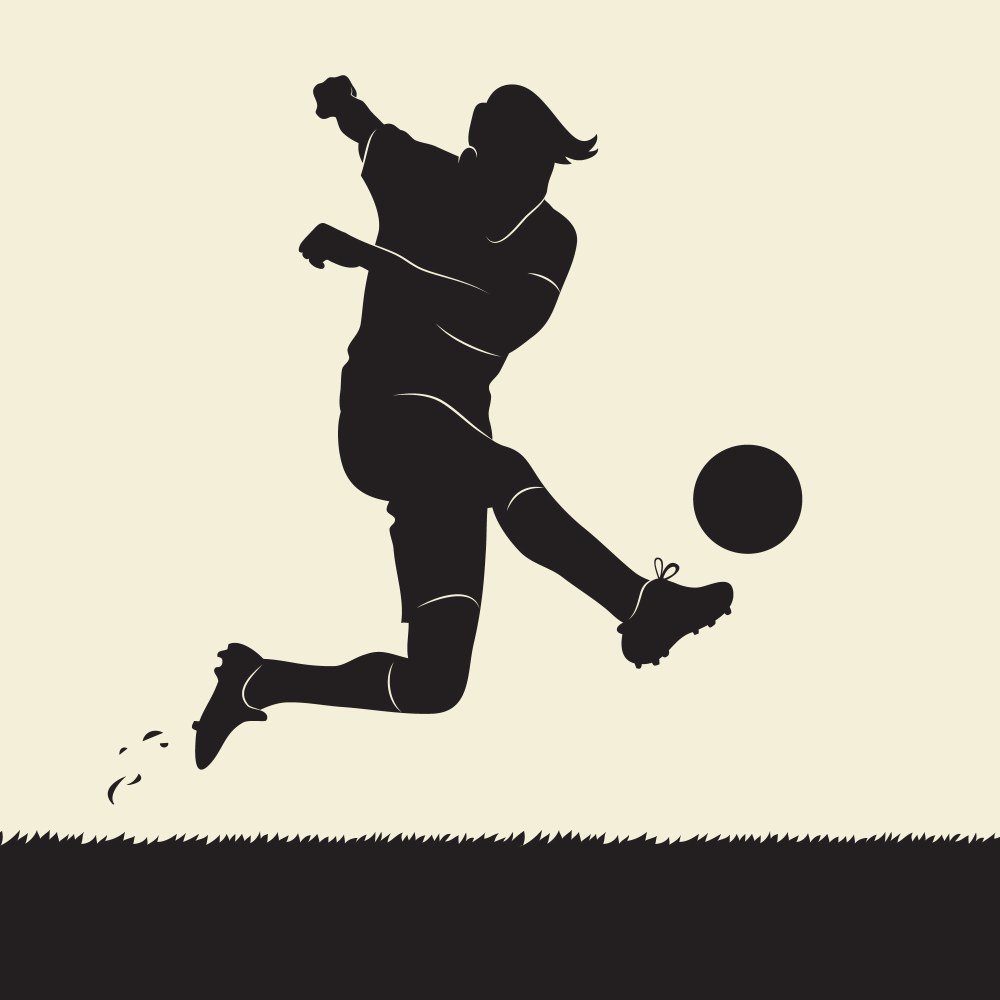
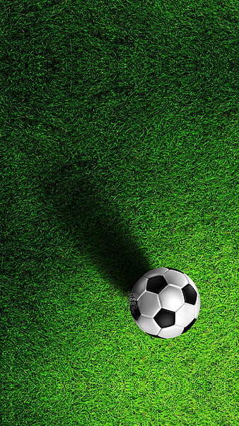
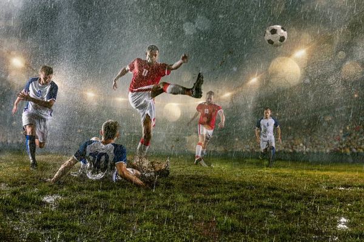
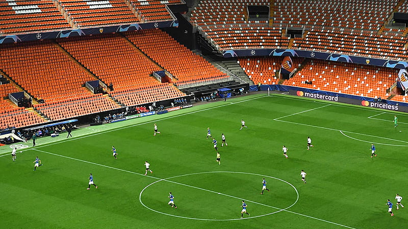
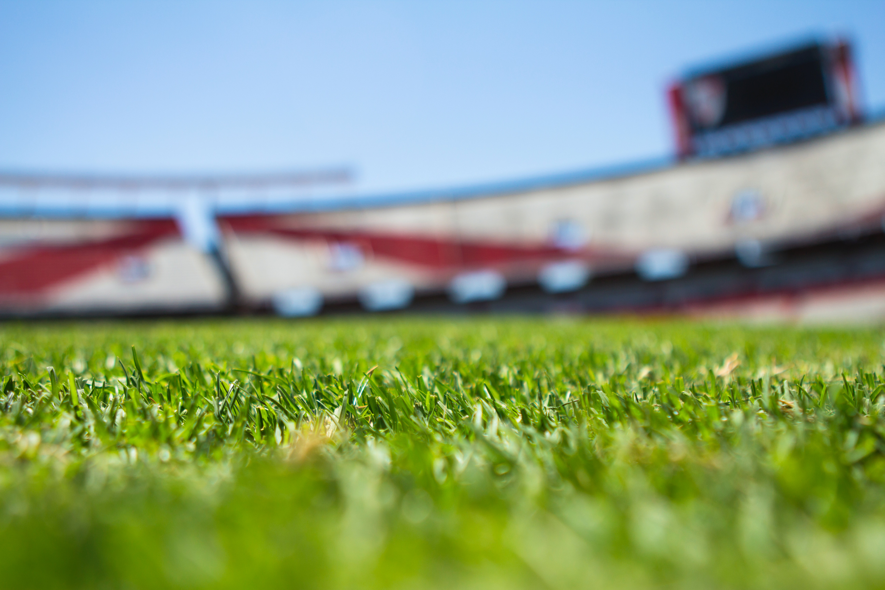

FOOTBALL

Football is a popular sport played and followed by millions of people worldwide. It's known by different names in various regions, such as soccer in the United States and Canada. Here's an overview of the game to help you write your blog on football information:
Objective of the Game:
Football is a team sport where the primary objective is to score goals by getting the ball into the opposing team's net. Each team has a goalkeeper and outfield players who work together to control the ball, pass it, and try to score goals.

Field and Equipment:
The game is typically played on a rectangular field with goals at each end. The field is marked with lines, and the dimensions can vary. Players wear a specific uniform, including jerseys, shorts, socks, and boots with studs for grip on the grass.
Teams and Positions:
A football team consists of 11 players, including a goalkeeper. The players are assigned specific positions like forwards, midfielders, defenders, and the goalkeeper. Each position has its own roles and responsibilities during the game.
Game Duration and Structure:
A standard football game is typically divided into two halves, each lasting 45 minutes, with a 15-minute break at halftime. If the scores are tied at the end of regulation time, some games may go into overtime or a penalty shootout to determine the winner.
Rules and Gameplay:
The game begins with a kick-off at the center of the field. Players move the ball using any part of their body except their arms and hands. The team that scores the most goals by the end of the game wins. Common violations include offside, fouls, and misconduct like yellow and red cards.
Scoring and Winning:
A goal is scored when the ball crosses the goal line between the goalposts and beneath the crossbar. The team with the most goals at the end of the game wins. In knockout tournaments, a tie may be broken through extra time and penalty shootouts.
Football Leagues and Tournaments:
Football is played at various levels, from local leagues to international competitions. Some of the most prestigious tournaments include the FIFA World Cup, UEFA Champions League, English Premier League, La Liga, Serie A, and Bundesliga etc.


Popularity and Impact:
Football is one of the most popular sports globally, with a massive fan base and significant cultural and economic impact. It transcends borders and brings people together, fostering a sense of community and competition.
Notable Players and Legends:
Football has seen many legendary players like Pelé, Diego Maradona, Lionel Messi, Cristiano Ronaldo, and many others who have left a lasting impact on the sport and achieved remarkable feats.

History and Evolution


Football's origins can be traced back thousands of years, with forms of the game played in ancient civilizations. Modern football, as we know it today, evolved in England during the 19th century. The rules were standardized, and the first football association was formed in 1863.The history of football, also known as soccer in some regions, is rich and diverse, spanning thousands of years and evolving through various cultures and civilizations. Here's a brief overview of its historical journey:
Ancient Origins:
Football-like games have ancient origins and were played in different forms across various cultures. Games resembling football were played in ancient China, Greece, Rome, and parts of Central and South America. These early forms often involved kicking a ball or an object towards a goal.
Medieval and Early Modern Period:
During the medieval period in Europe, a variety of ball games were played, many of which involved kicking and handling a ball. However, these games had different rules and were often violent and chaotic. Over time, communities began to establish standardized rules to govern the game.
Codification of Rules:
The modern form of football began to take shape in the 19th century in the United Kingdom. The need for standardized rules led to the formation of the first official football association. The Football Association (FA) was established in London in 1863, and it played a crucial role in unifying and codifying the rules of the game.
Early Evolution and Spread:
The FA's rules became widely accepted, and football quickly gained popularity in schools, clubs, and communities. The game spread beyond the borders of the UK to other parts of Europe and beyond, including South America. International matches started being organized, marking the beginning of international football.
The FIFA Formation:
In 1904, representatives from several countries met in Paris to form the Fédération Internationale de Football Association (FIFA), the international governing body for football. FIFA aimed to coordinate and organize international competitions, including the World Cup.

FIFA World Cup:
The FIFA World Cup, first held in 1930, is the most prestigious international football tournament. It is held every four years, bringing together national teams from around the world to compete for the title of world champion. The tournament has become one of the most-watched sporting events globally.
Post-War Growth and Expansion:
After World War II, football experienced a significant boom in popularity and expansion. The game reached new heights, both in terms of international reach and professionalism. Leagues in various countries, such as the English Premier League, Serie A, La Liga, and Bundesliga, gained prominence and showcased top-level football.
Technological and Cultural Influence:
Advances in technology, especially television and the internet, propelled football into the global spotlight, making it one of the most-watched and followed sports. Football has also become a significant cultural and social phenomenon, shaping the identity of communities and nations.
Football continues to evolve, with ongoing efforts to improve the game, enhance player safety, and increase inclusivity. It remains a beloved sport, enjoyed by millions of fans worldwide.

To explore top 10 players of current time Click Here
